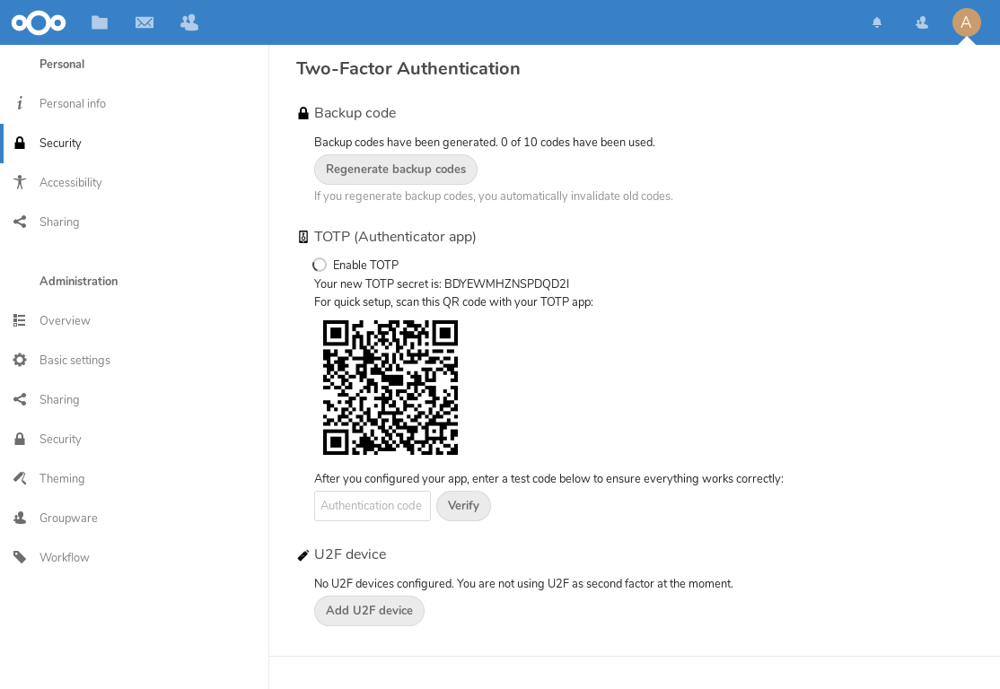
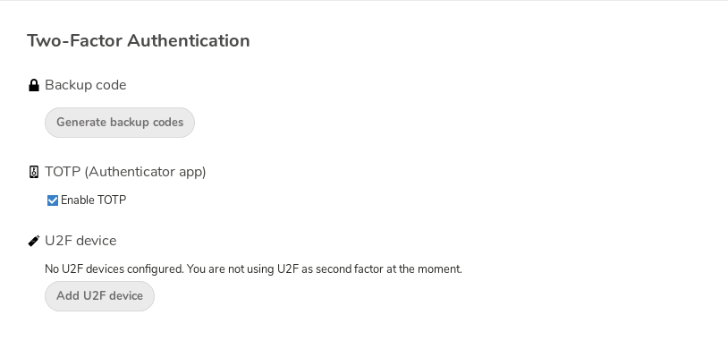
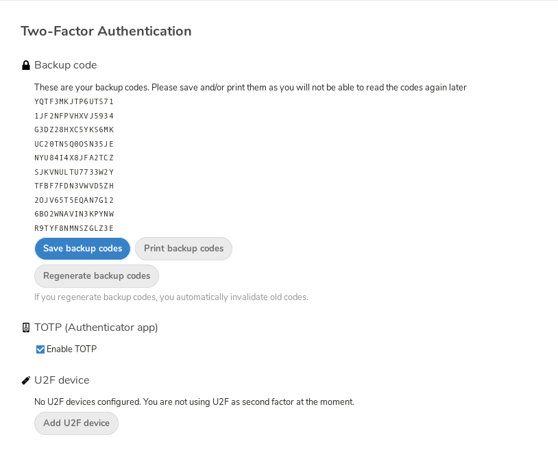
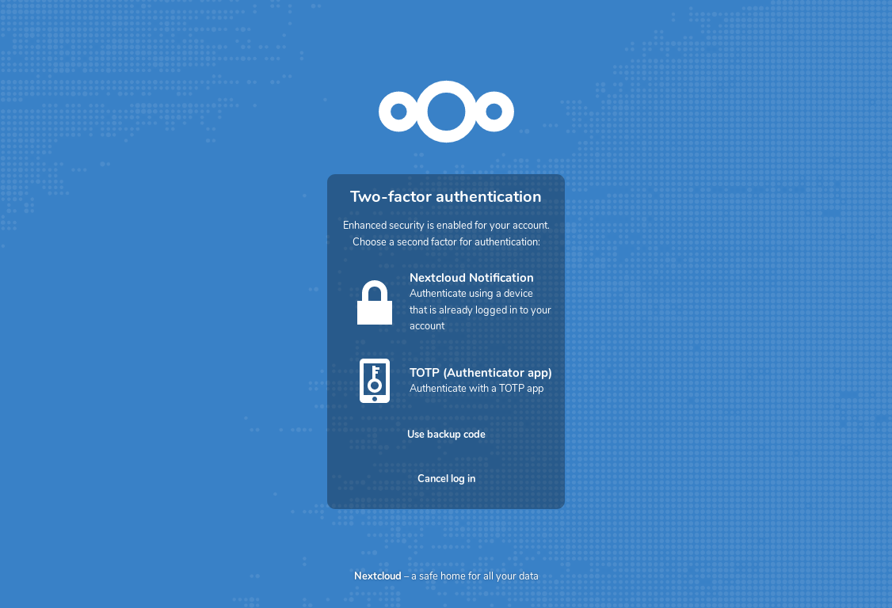
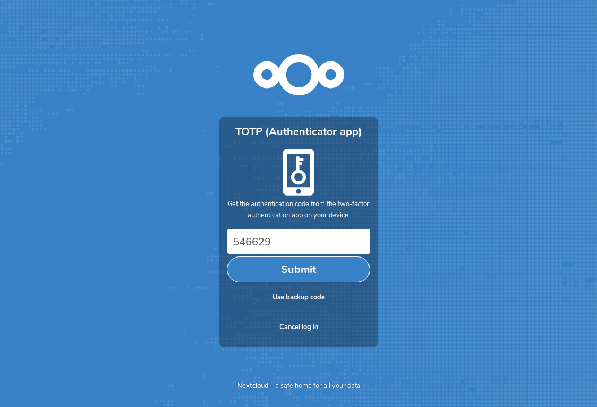

Uso da autenticação de dois fatores
A autenticação de dois fatores (2FA) é uma forma de proteger sua conta Nextcloud contra acesso não autorizado. Funciona exigindo duas ‘provas’ diferentes da sua identidade. Por exemplo, algo que você conhece (como uma senha) e algo que você possui como uma chave física. Normalmente, o primeiro fator é uma senha como você já tem e o segundo pode ser uma mensagem de texto que você recebe ou um código que você gera em seu telefone ou outro dispositivo (algo que você tem). Nextcloud suporta uma variedade de segundos fatores e mais podem ser adicionados.
Depois que um aplicativo de autenticação de dois fatores for ativado pelo seu administrador, você poderá ativá-lo e configurá-lo em Configuração de suas preferências.
Configurando autenticação de dois fatores
Nas suas configurações pessoais, procure a opção Autenticação de dois fatores. Neste exemplo, trata-se do TOTP, um código baseado em tempo compatível com o Google Authenticator:

Você verá seu segredo e um código QR que pode ser lido pelo aplicativo TOTP em seu telefone (ou outro dispositivo). Dependendo do aplicativo ou ferramenta, digite o código ou escaneie o QR e seu dispositivo mostrará um código de login que muda a cada 30 segundos.
Códigos de recuperação caso você perca seu fator de autenticação de dois fatores
Você deve sempre gerar códigos de backup para a autenticação de dois fatores (2FA). Se o seu dispositivo de segundo fator for roubado ou deixar de funcionar, você poderá usar um desses códigos para desbloquear sua conta. Eles funcionam, na prática, como um segundo fator de backup. Para obter os códigos de backup, acesse suas configurações pessoais e procure na seção Autenticação de dois fatores. Selecione Gerar códigos de backup:

Em seguida, você verá uma lista de códigos de backup de uso único:

Guarde esses códigos em um local seguro, onde você possa encontrá-los. Não os guarde junto com seu fator de autenticação secundário (como seu celular), mas guarde-os separadamente para que, caso perca um, não perca o outro.
Iniciar sessão com autenticação de dois factores
Depois de sair e fazer login novamente, você verá uma solicitação para inserir o código TOTP no seu navegador. Se você tiver ativado mais de um fator de autenticação secundário, será exibida uma tela de seleção na qual você poderá escolher qual método usar para este login. Selecione TOTP:

Agora, basta inserir seu código:

Se o código estiver correto, você será redirecionado para sua conta Nextcloud.
Nota
Como o código é baseado no tempo, é importante que o relógio do seu servidor e o do seu celular estejam praticamente sincronizados. Um desvio de alguns segundos não será um problema.
Usar autenticação de dois fatores com tokens de hardware
Você pode usar a autenticação de dois fatores com base em tokens de hardware. Sabe-se que os seguintes dispositivos funcionam:
Baseado em TOTP:
Baseado em FIDO2:
Usar aplicativos cliente com autenticação de dois fatores
Depois de ativar a autenticação de dois fatores (2FA), seus clientes não poderão mais se conectar apenas com a senha, a menos que também tenham suporte para a autenticação de dois fatores. Para resolver isso, você deve gerar senhas específicas para cada dispositivo para eles. Consulte Gerenciar navegadores e dispositivos conectados para obter mais informações sobre como fazer isso.
Considerações
Se você usar o WebAuthn para fazer login no Nextcloud, certifique-se de não usar o mesmo token para a autenticação de dois fatores (2FA), pois isso significaria que você estaria, mais uma vez, usando apenas um único fator.